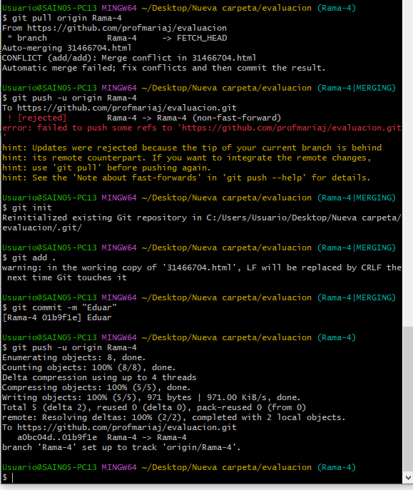
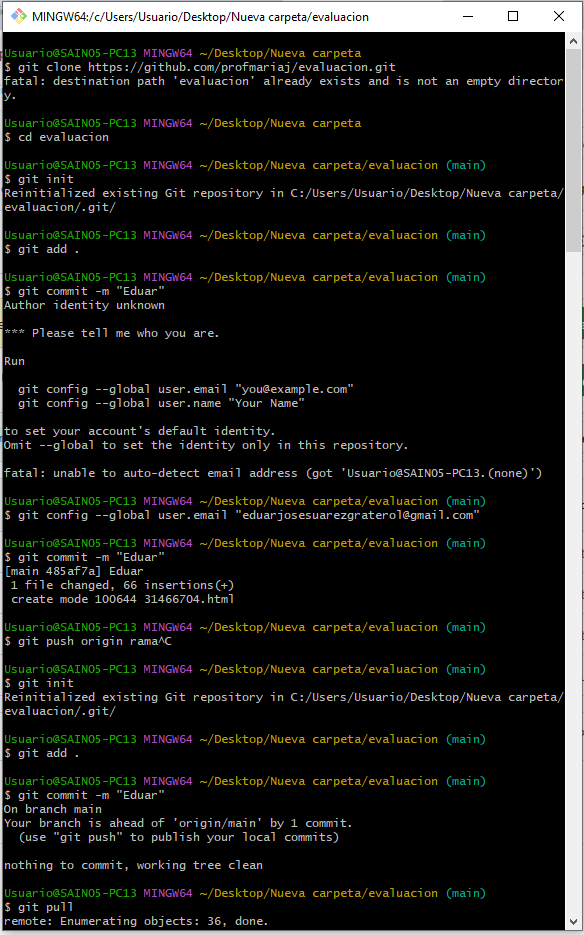
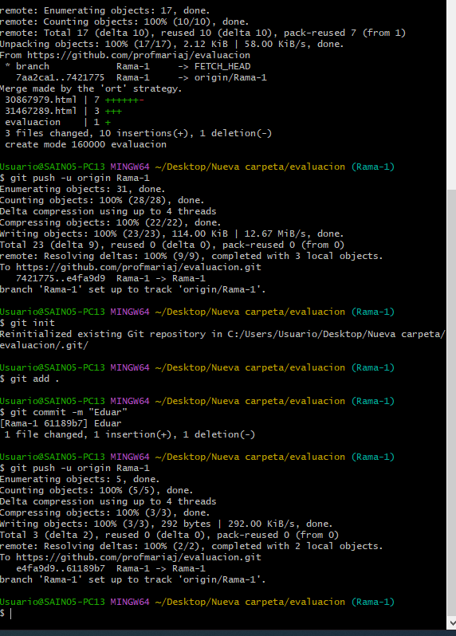

Descripcion de la importancia de del comtrol de versiones
Es una muy buena herrramienta para el mejor manejo de los archivos y una manera de respaldar la informacion y evitar los errores, en dado caso de cometer un error puedo aceder a mi historial de Git y recuperar la informacion pasada donde no esta el error.
Reflexion sobre Git
Lo que mas me gusta de git es que se puede trabajar desde remoto con distintas personas sin perder informacion de manera rapida y sencilla atravez de comandos, ademas de resguardar la informacion sirve como una nuve para los codigos creados y te los puede mantener sea en publico para todo el mundo o privado que es mas para tus trabajos.
- 
- 
- 